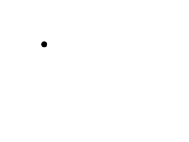
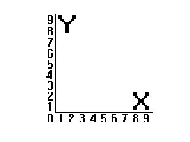
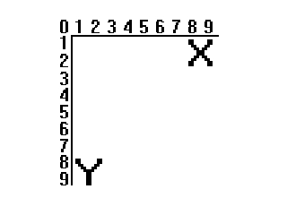

特别声明：从本课开始，本教程将告别呆板的翻译，来自哈尔滨工业大学的西瓜同学将为我们带来生动活泼的译作。敬请留意页面左下角作者署名的变化！

万众期待的时刻到了，现在我们要让这样的一个小圆点在屏幕上溜达溜达。这可能会比看起来的要困难一些，因为它需要你对关键事件有较深的认识。这节课你将学习让物体在屏幕上运动的相关基本概念。//待会儿要在屏幕上溜达的小圆点
class Dot
{
private:
//圆点的X，Y坐标
int x, y;
//圆点分别在X，Y方向上的速度分量
int xVel, yVel;
public:
//初始化变量
Dot();
//接收键盘输入并改变圆点的速度
void handle_input();
//溜圆点函数
void move();
//显示原点
void show();
};
这是我们对原点类的声明。
“x”和“y”是圆点的坐标，而“xVel”和“yVel”是圆点的运动速率。
构造函数将负责初始化圆点的相关变量，
“x”和“y”是圆点的坐标，而“xVel”和“yVel”是圆点的运动速率。
构造函数将负责初始化圆点的相关变量，
handle_input()处理相关事件，move()让原点运动，而show()函数会将它显示到屏幕上。
Dot::Dot()
{
//初始化坐标
x = 0;
y = 0;
//初始化速率
xVel = 0;
yVel = 0;
}
如你所见，这段构建函数将圆点放在左上角，同时让新生成的圆点固定不动。
void Dot::handle_input()
{
//当一个键被按下
if( event.type == SDL_KEYDOWN )
{
//调整速度
switch( event.key.keysym.sym )
{
case SDLK_UP: yVel -= DOT_HEIGHT / 2; break;
case SDLK_DOWN: yVel += DOT_HEIGHT / 2; break;
case SDLK_LEFT: xVel -= DOT_WIDTH / 2; break;
case SDLK_RIGHT: xVel += DOT_WIDTH / 2; break;
}
}
这是圆点的事件处理函数。
现在你可能会想完全没必要这么做，你会觉得在键盘被按下时，使用x++/x--或y++/y—也够用。
但如果你这么做的话，他们只会在你按键时才会运动。这意味着，如果你想让圆点持续运动，你得把按键按下松开松开按下如此反复不止才行。
所以我们用设置圆点的速度变量来取代那套麻烦的流程。这个圆点会有两个速度向量，分别标明它沿X轴的运动速度与沿Y轴的速度。当键盘上的“右箭头”键被按下时 我们将它向左的速度增加圆点宽度的一半（也就是10）这样圆点的X坐标每帧会增加10。针对Y坐标方法也是一样。
谨记我们的坐标轴不是这样的：
而是这样的：
所以当Y坐标增加时，圆点会下降，而在减少时圆点会上升。
现在你可能会想完全没必要这么做，你会觉得在键盘被按下时，使用x++/x--或y++/y—也够用。
但如果你这么做的话，他们只会在你按键时才会运动。这意味着，如果你想让圆点持续运动，你得把按键按下松开松开按下如此反复不止才行。
所以我们用设置圆点的速度变量来取代那套麻烦的流程。这个圆点会有两个速度向量，分别标明它沿X轴的运动速度与沿Y轴的速度。当键盘上的“右箭头”键被按下时 我们将它向左的速度增加圆点宽度的一半（也就是10）这样圆点的X坐标每帧会增加10。针对Y坐标方法也是一样。
谨记我们的坐标轴不是这样的：

而是这样的：

所以当Y坐标增加时，圆点会下降，而在减少时圆点会上升。
//当一个键盘按键被松开
else if( event.type == SDL_KEYUP )
{
//调整速度
switch( event.key.keysym.sym )
{
case SDLK_UP: yVel += DOT_HEIGHT / 2; break;
case SDLK_DOWN: yVel -= DOT_HEIGHT / 2; break;
case SDLK_LEFT: xVel += DOT_WIDTH / 2; break;
case SDLK_RIGHT: xVel -= DOT_WIDTH / 2; break;
}
}
}
我们还要处理一个键被松开时的事件。当一个键被松开时，SDL_KEYUP事件就会发生。
现在，当你松开一个键时，刚才按键时对速度的修改就会被撤销。誓如说，当你按下右箭头键时，你将圆点在X轴方向上的速度增加了10，那么当你松开这个键时，速度会减少10。
现在，当你松开一个键时，刚才按键时对速度的修改就会被撤销。誓如说，当你按下右箭头键时，你将圆点在X轴方向上的速度增加了10，那么当你松开这个键时，速度会减少10。
void Dot::move()
{
//将圆点左右移动
x += xVel;
//当圆点往左右任意一侧走得太远时
if( ( x < 0 ) || ( x + DOT_WIDTH > SCREEN_WIDTH ) )
{
//把它拽回来
x -= xVel;
}
//将圆点上下移动
y += yVel;
//当圆点往上下任意一侧走得太远时
if( ( y < 0 ) || ( y + DOT_HEIGHT > SCREEN_HEIGHT ) )
{
//拽回来
y -= yVel;
}
}
这便是移动圆点的代码了。
首先，我们将圆点的坐标加上它的速度，这样圆点就会移动，然后，我们检查圆点有没有跑到屏幕外面去。如果出去了，我们就再减去速度值，来撤销移动，这样它就跑不出去了。
我承认这种做法并不高明，因为你可能会看到这样的现象：
出现这种情况的原因是你的速度的值累加后无法被窗口的宽度（或高度）整除，所以原点不会“靠”到墙上，而只是移动到它要超出边界前的最后位置。
一个好方法是，当圆点跑到屏幕外时，将圆点归位到屏幕尺寸减去圆点尺寸的位置。但是呢，这段代码你们就自己捉摸吧，我才不会告诉你我已经懒到不愿回头改代码的地步了呢！
首先，我们将圆点的坐标加上它的速度，这样圆点就会移动，然后，我们检查圆点有没有跑到屏幕外面去。如果出去了，我们就再减去速度值，来撤销移动，这样它就跑不出去了。
我承认这种做法并不高明，因为你可能会看到这样的现象：
一个好方法是，当圆点跑到屏幕外时，将圆点归位到屏幕尺寸减去圆点尺寸的位置。但是呢，这段代码你们就自己捉摸吧，我才不会告诉你我已经懒到不愿回头改代码的地步了呢！
void Dot::show()
{
//显示圆点
apply_surface( x, y, dot, screen );
}
这是圆点的
show()函数，它将把圆点图层显示到屏幕上。 //当用户还未退出
while( quit == false )
{
//启动帧计时器
fps.start();
//当有事件需要处理
while( SDL_PollEvent( &event ) )
{
//处理圆点的事件
myDot.handle_input();
//当用户关闭窗口
if( event.type == SDL_QUIT )
{
//退出程序
quit = true;
}
}
//移动圆点
myDot.move();
//填充白色背景
SDL_FillRect( screen, ≻reen->clip_rect, SDL_MapRGB( screen->format, 0xFF, 0xFF, 0xFF ) );
//将圆点显示在屏幕上
myDot.show();
//更新窗口
if( SDL_Flip( screen ) == -1 )
{
return 1;
}
//限制帧率
if( fps.get_ticks() < 1000 / FRAMES_PER_SECOND )
{
SDL_Delay( ( 1000 / FRAMES_PER_SECOND ) - fps.get_ticks() );
}
}
这里就是主循环了。
首先我们检查是否有时间发生，先处理关于圆点的，再处理用户退出时间。接下来我们移动圆点，将屏幕用白色背景填充后再将圆点显示到屏幕上。最后我们更新窗口，并限制帧率。
现在，事件处理什么的都变成即时进行的了，你需要搞明白怎样怎样才是好的代码流程。我在 文章 4 中提供了一个标准大游戏流程，我建议你们看一看。
首先我们检查是否有时间发生，先处理关于圆点的，再处理用户退出时间。接下来我们移动圆点，将屏幕用白色背景填充后再将圆点显示到屏幕上。最后我们更新窗口，并限制帧率。
现在，事件处理什么的都变成即时进行的了，你需要搞明白怎样怎样才是好的代码流程。我在 文章 4 中提供了一个标准大游戏流程，我建议你们看一看。